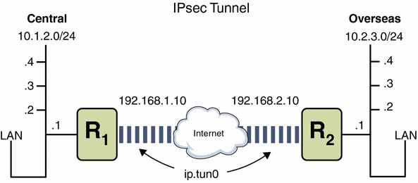

Previous
Previous
 How to Verify That Packets Are Protected
With IPsec
How to Verify That Packets Are Protected
With IPsec
To verify that packets are protected, test the connection with the snoop command. The following prefixes can appear in the snoop output:
AH: Prefix indicates that AH is protecting the headers. You see AH: if you used auth_alg to protect the traffic.
ESP: Prefix indicates that encrypted data is being sent. You see ESP: if you used encr_auth_alg or encr_alg to protect the traffic.
Before You Begin
You must be superuser or have assumed an equivalent role to create the snoop output. You must have access to both systems to test the connection.
On one system, such as partym, become superuser.
% su - Password: Type root password #
From the partym system, prepare to snoop packets from a remote system.
In a terminal window on partym, snoop the packets from the enigma system.
# snoop -v enigma Using device /dev/hme (promiscuous mode)
Send a packet from the remote system.
In another terminal window, remotely log in to the enigma system. Provide your password. Then, become superuser and send a packet from the enigma system to the partym system. The packet should be captured by the snoop -v enigma command.
% ssh enigma Password: Type your password % su - Password: Type root password # ping partym
Examine the snoop output.
On the partym system, you should see output that includes AH and ESP information after the initial IP header information. AH and ESP information that resembles the following shows that packets are being protected:
IP: Time to live = 64 seconds/hops IP: Protocol = 51 (AH) IP: Header checksum = 4e0e IP: Source address = 192.168.116.16, enigma IP: Destination address = 192.168.13.213, partym IP: No options IP: AH: ----- Authentication Header ----- AH: AH: Next header = 50 (ESP) AH: AH length = 4 (24 bytes) AH: <Reserved field = 0x0> AH: SPI = 0xb3a8d714 AH: Replay = 52 AH: ICV = c653901433ef5a7d77c76eaa AH: ESP: ----- Encapsulating Security Payload ----- ESP: ESP: SPI = 0xd4f40a61 ESP: Replay = 52 ESP: ....ENCRYPTED DATA.... ETHER: ----- Ether Header ----- ...
How to Create a Role for Configuring Network
Security
If you are using role-based access control (RBAC) to administer your systems, you use this procedure to provide a network management or network security role.
Find the Network rights profiles in the local prof_attr database.
% cd /etc/security % grep Network prof_attr Network Management:::Manage the host and network configuration ... Network Security:::Manage network and host security ... System Administrator:::...Network Management...
The Network Management profile is a supplementary profile in the System Administrator profile. If you have included the System Administrator rights profile in a role, then that role can execute the commands in the Network Management profile.
Determine which commands are in the Network Management rights profile.
% grep "Network Management" /etc/security/exec_attr Network Management:solaris:cmd:::/usr/sbin/ifconfig:privs=sys_net_config ... Network Management:suser:cmd:::/usr/sbin/snoop:uid=0
The solaris policy commands run with privilege (privs=sys_net_config). The suser policy commands run as superuser (uid=0).
Determine which commands are in the Network Security rights profile.
% grep "Network Security" /etc/security/exec_attr ... Network Security:solaris:cmd:::/usr/sbin/ipsecconf:privs=sys_net_config ... Network Security:solaris:cmd:::/usr/sbin/ipseckey:privs=sys_net_config ...
Create a role that includes the Network Security and the Network Management rights profiles.
A role with both profiles can execute the ifconfig, snoop, ipsecconf, and ipseckey commands, among others, with appropriate privilege.
To create the role, assign the role to a user, and register the changes with the name service, see "Configuring RBAC (Task Map)" in System Administration Guide: Security Services.
Protecting a VPN With IPsec (Task Map)
The following table points to procedures that configure IPsec to protect traffic across the Internet. These procedures set up a secure virtual private network (VPN) between two systems that are separated by the Internet. One common use of this technology is to protect traffic between home workers and their corporate office.
Task | Description | For Instructions |
|---|---|---|
Protect tunnel traffic in tunnel mode over IPv4 | Protects traffic in tunnel mode between two Solaris Express systems. Also, protects traffic in tunnel mode between another platform and a Solaris Express system. | How to Protect a VPN With an IPsec Tunnel in Tunnel Mode Over IPv4 |
Protect tunnel traffic in tunnel mode over IPv6 | Protects traffic in tunnel mode between two Solaris systems that are using the IPv6 protocol. | How to Protect a VPN With an IPsec Tunnel in Tunnel Mode Over IPv6 |
Protect tunnel traffic in transport mode over IPv4 | Protects traffic in transport mode between two Solaris Express systems. Also, protects traffic in transport mode between a system that is running an earlier version of the Solaris OS and a Solaris Express system. | How to Protect a VPN With an IPsec Tunnel in Transport Mode Over IPv4 |
Protects traffic by using the older syntax. This is useful when you are communicating with a system that is running an earlier version of the Solaris OS. This method simplifies comparing the configuration files on the two systems. | ||
Protect tunnel traffic in transport mode over IPv6 | Protects traffic in transport mode between two Solaris systems that are using the IPv6 protocol. | How to Protect a VPN With an IPsec Tunnel in Transport Mode Over IPv6 |
Protecting a VPN With IPsec
IPsec tunnels can protect a VPN. In Solaris Express, Developer Edition 2/07, a tunnel can be in tunnel mode, or in transport mode. Tunnel mode is interoperable with the implementation of IPsec by other vendors. Transport mode is interoperable with earlier versions of the Solaris OS. For a discussion of tunnel modes, see Transport and Tunnel Modes in IPsec.
Tunnels in tunnel mode offer more fine-grained control of the traffic. In tunnel mode, for an inner IP address, you can specify the particular protection you want down to a single port. For possible IPsec policies, see the examples that follow the tunnel diagram in Figure 20-1.
Figure 20-1 IPsec Tunnel Diagram
The following examples assume that the tunnel is configured for all subnets of the LANs:
## Tunnel configuration ## ifconfig ip.tun0 10.1.2.1 10.2.3.1 tsrc 192.168.1.10 tdst 192.168.2.10 |
Example 20-3 Creating a Tunnel That All Subnets Can Use
In this example, all traffic from the local LANs in Central in Figure 20-1, can be tunneled through Router 1 to Router 2, and then delivered to all local LANs of Overseas. The traffic is encrypted with AES.
## IPsec policy ##
{tunnel ip.tun0 negotiate tunnel}
ipsec {encr_algs aes encr_auth_algs md5 sa shared}
|
Example 20-4 Creating a Tunnel That Connects Two Subnets Only
In this example, only traffic between subnet 10.1.2.0/24 of Central and subnet 10.2.3.0/24 of Overseas is tunneled and encrypted. In the absence of other IPsec policies for Central, if Central attempts to route any traffic for other LANs over this tunnel, the traffic is dropped at Router 1.
## IPsec policy ##
{tunnel ip.tun0 negotiate tunnel laddr 10.1.2.0/24 raddr 10.2.3.0/24}
ipsec {encr_algs aes encr_auth_algs md5 sa shared}
|
Example 20-5 Creating a Tunnel for Only Email Traffic Between Two Subnets
In this example, a tunnel is created for email traffic only. The traffic is delivered from 10.1.2.0/24 of Central to the email server on the 10.2.3.0/24 subnet of the Overseas LAN. The email is encrypted with Blowfish. The policies apply to the remote and local email ports. The rport policy protects mail that Central sends to the remote email port of Overseas. The lport policy protects mail Central receives from Overseas on local port 25.
## IPsec policy for email from Central to Overseas ##
{tunnel ip.tun0 negotiate tunnel ulp tcp rport 25
laddr 10.1.2.0/24 raddr 10.2.3.0/24}
ipsec {encr_algs blowfish encr_auth_algs md5 sa shared}
|
## IPsec policy for email from Overseas to Central ##
{tunnel ip.tun0 negotiate tunnel ulp tcp lport 25
laddr 10.1.2.0/24 raddr 10.2.3.0/24}
ipsec {encr_algs blowfish encr_auth_algs md5 sa shared}
|